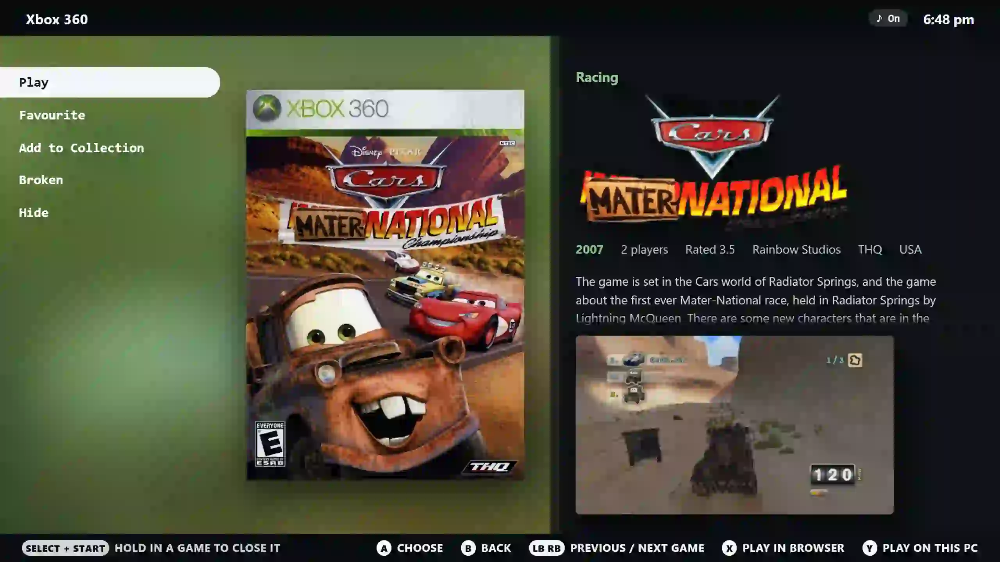

Sul tuo computer
Scarica l'app desktop o la versione portatile per Windows, macOS o Linux. Nient'altro da installare: nessun server, nessun Docker, nessuna impostazione da modificare.
Scarica l'ultima versioneGratuito · open source · self-hosted
game-sauce cataloga i giochi che possiedi, scarica le grafiche, ne fa girare molti nel tuo browser, avvia gli altri negli emulatori sul tuo PC e porta l'intera libreria sulla TV con uno Schermo grande comandato dal gamepad.
Windows · macOS (Apple silicon) · Linux · Docker, Unraid e Proxmox · Raspberry Pi
Gli screenshot e i video mostrano una libreria dimostrativa. Le copertine e le immagini dei giochi appartengono ai rispettivi proprietari.
Un'unica libreria per tutta la famiglia, su una macchina che controlli tu.
Gioca i giochi supportati nel browser, anche dallo smartphone.
Sfoglia, cerca e gioca senza toccare il mouse.
Due look, ciascuno chiaro o scuro. Cambia quando vuoi.
Una stella per i migliori, il resto in raccolte.
Leggi il manuale senza lasciare la pagina del gioco.
Windows, Mac, Linux, Docker, Raspberry Pi, Proxmox e Unraid.
Crea account, assegna il ruolo a ciascuno e disattiva qualsiasi account.
Una semplice griglia di giochi giocabili, senza download né pagine di amministrazione. Ideale per i bambini.
Scegli chi può scaricare i file di gioco: tutti, nessuno o persona per persona.
Ognuno vede i propri giochi Steam e console, e quelli di nessun altro.
Ognuno ha il proprio scaffale di dischi e cartucce.
Inglese, francese, cinese, spagnolo, portoghese, tedesco, giapponese e italiano.
Nessun tracciamento, nessuna trappola. Gratis, e tuo.
I backup e le impronte dei giochi vengono eseguiti secondo la pianificazione che imposti.
Backup programmati, con ripristino semplice.
Un report completo sulla salute di tutto il sistema.
Gli amministratori vengono avvisati in chat quando esce una nuova versione.
Console, portatili, computer e arcade, uno accanto all'altro.
Confrontati con No-Intro e Redump, così sai che un dump è buono.
Individua le copie in più e suggerisce quale tenere.
Trasforma nomi di file come sf2 in Street Fighter II.
Scopri quanto della lista ufficiale di ogni piattaforma possiedi, tra ROM, fisico e digitale.
Importa ed esporta il tuo catalogo in CSV.
I numeri della tua libreria, per chi ama i numeri.
Scarica copertine, loghi e video da ScreenScraper, SteamGridDB, IGDB o TheGamesDB, oppure usa i tuoi.
Due brevi clip dalla libreria demo integrata.
Una vista a schermo intero pensata per un gamepad e un divano. Aprila dalla Libreria con un clic e metti il browser o l'app desktop a schermo intero sulla TV.


Uno scaffale di copertine a schermo intero disposte in un arco morbido. Scegli una famiglia e una piattaforma, scorri con i tasti freccia, la rotellina del mouse, uno swipe o un gamepad e premi gioca.
Cataloga i giochi in scatola sul tuo scaffale reale, a mano o da un elenco, accanto alla tua collezione digitale. Ogni persona ha il proprio scaffale.
Messaggi privati tra le persone sul tuo server e avvisi dell'admin. Nulla esce dalla tua macchina.
Aspetti Classico e Moderno, chiaro e scuro. Stessa libreria, a tua scelta.


Scegli quello che fa per te. Ognuno richiede pochi minuti.
Scarica l'app desktop o la versione portatile per Windows, macOS o Linux. Nient'altro da installare: nessun server, nessun Docker, nessuna impostazione da modificare.
Scarica l'ultima versioneEseguilo con Docker, su Unraid o in un container Proxmox e usalo da ogni dispositivo di casa. La guida alla distribuzione spiega i passaggi.
Leggi la guida alla distribuzioneLa prima volta che si avvia, l'account creato per te viene mostrato una sola volta. Annotalo e cambia la password in Impostazioni. Se lo esponi a Internet, mettilo dietro una VPN o un reverse proxy con HTTPS.
No. game-sauce serve a gestire i giochi che possiedi. Non include né fornisce giochi o file BIOS e non scarica giochi per te: porti la tua collezione. Per giocare, il gioco nel browser usa EmulatorJS, un emulatore open source che il tuo browser carica quando premi Gioca. Per giocare sul tuo PC, la pagina Emulatori consiglia degli emulatori e rimanda a dove ottenerli, e il launcher avvia quelli che installi tu.
Sì. È open source con licenza MIT. Non c'è nessun account da creare, nessun abbonamento e nessun tracciamento. Alcuni provider di metadati ti chiedono di registrarti con un tuo account gratuito per usare il loro servizio.
Molte console più vecchie che non richiedono BIOS funzionano da una pagina web. I sistemi più recenti, e tutto ciò che richiede più di quanto un browser possa offrire, si avviano invece in un emulatore sul tuo PC tramite il launcher.
Non nelle cartelle che gli indichi. Li legge dove sono e non sposta, rinomina o elimina mai i file al loro interno. Gli strumenti di pulizia toccano solo le grafiche e i file che game-sauce ha memorizzato da sé.
Sì. Crea account per le persone di cui ti fidi. Le raccolte sono private per chi le ha create e gli account solo gioco vedono soltanto i giochi che si possono giocare nel browser.
Apri una issue o una discussione su GitHub, oppure scrivi a hello@gamesauce.app. La pagina Stato del sistema in Impostazioni crea un rapporto da copiare e incollare senza segreti.
game-sauce è gratuito e open source. Se ti è utile, puoi offrirmi un caffè. Mi aiuta a dedicare più tempo a nuove funzionalità, ai test su Windows, Mac e Linux e alle risposte alle domande.